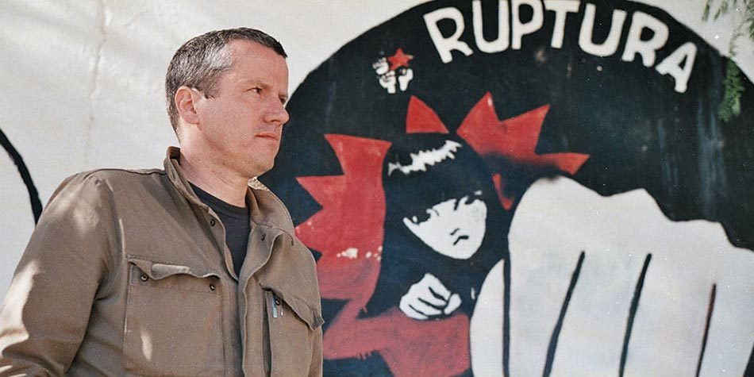
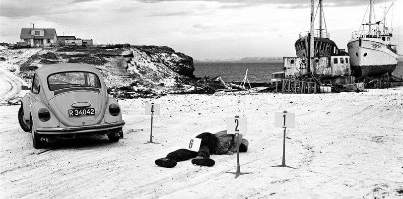

We're thrilled to be promoting two BBC Storyville documentaries this summer Accidental Anarchist (Hopscotch Films) and Out Of Thin Air (Mosaic Films). BBC Storyville consistently provides a window onto the world through its award-winning storytelling and both these documentaries fit the bill. For both campaigns, we will be using both traditional and non-traditional media to promote the films. From the Observer to Vice; Newsnight to The World Today with Tariq Ali.
Accidental Anarchist will be broadcast on the flagship BBC Four strand on Sunday 23 July. The documentary follows the remarkable story of Carne Ross from diplomat to anarchist and his discovery of a new form of politics for these turbulent times. Carne is described by John Le Carré as "a brave and original thinker and a man whose actions speak for his convictions".
The film follows Carne's journey to America, Europe and war-torn Syria where anarchist ideas of self-government and equality – above all of women – are being put into practice. The documentary is a compelling guide to the current political crises, but above all an inspiring insight into the practical possibility of a better society. Read Carne's Observer interview with Andrew Anthony here.
Out of Thin Air will be broadcast on BBC Four on Monday 14 August, ahead of an international Netflix release in September. This tense psychological thriller tells the true story of the biggest-ever criminal investigation in Iceland's history. In 1974 two men vanished several months apart. The infamous case – which soon became a double murder investigation – shook the country. But the police got nowhere: there were no bodies, no witnesses and no forensic evidence.
Then six suspects were arrested and confessed to the murders, many facing long harsh sentences. It seemed like justice had been done, but 40 years later this notorious murder case was reopened when new evidence brought into question everything that had gone before. Using first-person testimony, archive footage, personal diaries, false confessions, dramatic reconstruction and multiple narratives, Out of Thin Air brings together popular true-life crime, Scandi-noir and stylish cinematography.
tpr media has been engaged by the production companies to drive audiences for the films and to raise their own profile. We're proud of our experience spanning 20-years in broadcast, TV, film and arts PR, representing some of the world's most innovative and creative organisations including Channel 4 and UK-based production companies. Please get in touch if you'd like to know more about our work.